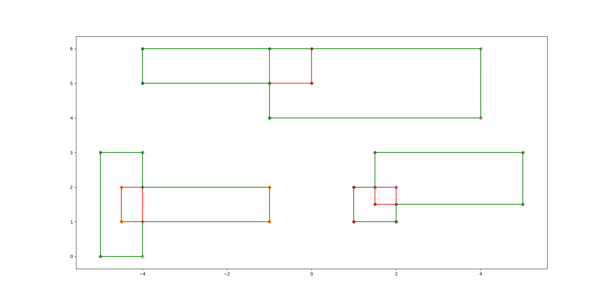

Input 4
6
-5 0
-4 3
-4.5 1
-1 2
-1 4
4 6
-4 5
0 6
1 1
2 2
1.5 1.5
5 3
Output 4
Measure = 25
Number of Contour Lines = 22
Contour Line Segments:-
-5 0 -4 0
1 1 2 1
-4 1 -1 1
2 1.5 5 1.5
1 2 1.5 2
-4 2 -1 2
1.5 3 5 3
-5 3 -4 3
-1 4 4 4
-4 5 -1 5
-4 6 4 6
-5 0 -5 3
-4 0 -4 1
-4 2 -4 3
-4 5 -4 6
-1 1 -1 2
-1 4 -1 5
1 1 1 2
1.5 2 1.5 3
2 1 2 1.5
4 4 4 6
5 1.5 5 3
Contour Length = 46
